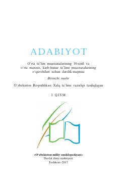

A110-sinf o'quvchilari uchun mo'ljallangan adabiyot darslik-majmuasi.
Ushbu darslik-majmua o'rta ta'lim muassasalarining 10-sinf o'quvchilari uchun mo'ljallangan bo'lib, xalq og'zaki ijodi, mumtoz va zamonaviy o'zbek adabiyoti hamda jahon adabiyotining sara namunalarini o'z ichiga oladi. Kitob o'quvchilarning ma'naviy dunyosini boyitish, milliy va umuminsoniy qadriyatlarni singdirishga xizmat qiladi.